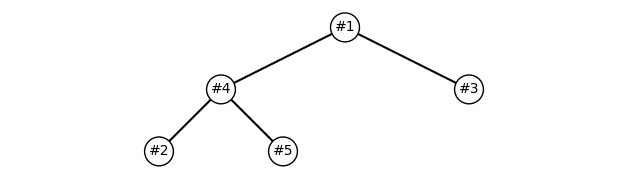

透過 heapq 設置下單優先級以便洗價與定時單優先處理
December 19, 2023

下單優先級的需求
通常在開發一個交易軟體，除了使用者介面操作觸發下單行為之外
可能也會有系統本身排程觸發的下單行為，例如客戶端洗價、客戶端定時單、客戶端預風控等
這些下單可能會存在優先級，例如洗價第一、定時單第二、用戶手動下單第三
當然這個順序也可能根據需求不同，或是有更複雜的優先級評判原則
例如各種不同市場的商品都是使用相同 API，而 API 本身會依序執行
那可能現貨的單必須先送出，其次是期貨的單 … 類似這樣的情況
總之，送單優先級的需求一定有，甚至其他各種層面也會有優先級的需求
使用 heapq
Python 的 heapq 本身實現了堆隊列的功能，可以讓我們實現優先級隊列：
import heapq
class PriorityOrderQueue:
def __init__(self):
self.orderQueue = []
def push(self, order):
heapq.heappush(self.orderQueue, (-order[0], order[1:]))
def pop(self):
if self.orderQueue:
return heapq.heappop(self.orderQueue)[1]
raise IndexError("不能對空的優先級隊列做彈出")
def items(self):
return self.orderQueue
def __bool__(self):
return bool(self.orderQueue)
pendingOrders = PriorityOrderQueue()這個優先級下單隊列，需要放入 (優先級, 流水號, 資料)
然後在插入 (push) 會轉換成二元組 (優先級, (流水號, 資料))
並以優先級的負值作為堆隊列根節點的彈出 (pop) 的參考，越小值越先彈出
除了 push , pop 之外，還需要 __bool__ 以便我們阻塞消化， items 取得全部是為了畫圖
以下是一個範例：
pendingOrders = PriorityOrderQueue()
pendingOrders.push((5, 1, "洗價處價單, 買進 10 張, 台積電"))
pendingOrders.push((1, 2, "手動下單, 賣出 5 張, 長榮"))
pendingOrders.push((3, 3, "定時單, 買進 20 張, 廣達"))
while pendingOrders:
print(pendingOrders.pop())
# (1, '洗價觸價單, 買進 10 張, 台積電')
# (3, '定時單, 買進 20 張, 廣達')
# (2, '手動下單, 賣出 5 張, 長榮')對 heapq 繪圖
我們也可以繪圖來看看我們的堆隊列：
pendingOrders = PriorityOrderQueue()
# 插入一些交易数据，格式为 (优先级, 交易信息)
pendingOrders.push((5, 1, "洗價觸價單, 買進 10 張, 台積電"))
pendingOrders.push((1, 2, "手動下單, 賣出 5 張, 長榮"))
pendingOrders.push((3, 3, "定時單, 買進 20 張, 廣達"))
pendingOrders.push((5, 4, "洗價觸價單, 買進 3 張, 群益證"))
pendingOrders.push((1, 5, "手動下單, 賣出 5 張, 台積電"))
def plotHeap(heap):
# 計算二項樹深度
heapSize = len(heap)
depth = int(np.ceil(np.log2(heapSize + 1)))
# 繪圖設定
_, ax = plt.subplots()
ax.set_aspect('equal')
plt.axis('off')
# 遞迴繪製節點和邊
def drawNode(nodeIdx, x, y, dx):
if nodeIdx < heapSize:
# 繪製節點
ax.text(x, y, "#"+str(heap[nodeIdx][1][0]), ha='center', va='center',
bbox=dict(facecolor='white', edgecolor='black', boxstyle='circle'))
# 左子節點
leftChildIdx = 2 * nodeIdx + 1
if leftChildIdx < heapSize:
leftX, leftY = x - dx, y - 1
ax.plot([x, leftX], [y, leftY], c='black')
drawNode(leftChildIdx, leftX, leftY, dx / 2)
# 右子節點
rightChildIdx = leftChildIdx + 1
if rightChildIdx < heapSize:
rightX, rightY = x + dx, y - 1
ax.plot([x, rightX], [y, rightY], c='black')
drawNode(rightChildIdx, rightX, rightY, dx / 2)
# 最終從根節點開始繪製
drawNode(0, 0, 0, 2 ** (depth - 2))
# 調整邊界與顯示
plt.xlim(-2**(depth-1), 2**(depth-1))
plt.ylim(-depth, 1)
plt.show()
plotHeap(pendingOrdersHeap)
依序操作就會從根節點依序往下處理：
while pendingOrders:
print(pendingOrders.pop())
# (1, '洗價觸價單, 買進 10 張, 台積電')
# (4, '洗價觸價單, 買進 3 張, 群益證')
# (3, '定時單, 買進 20 張, 廣達')
# (2, '手動下單, 賣出 5 張, 長榮')
# (5, '手動下單, 賣出 5 張, 台積電')